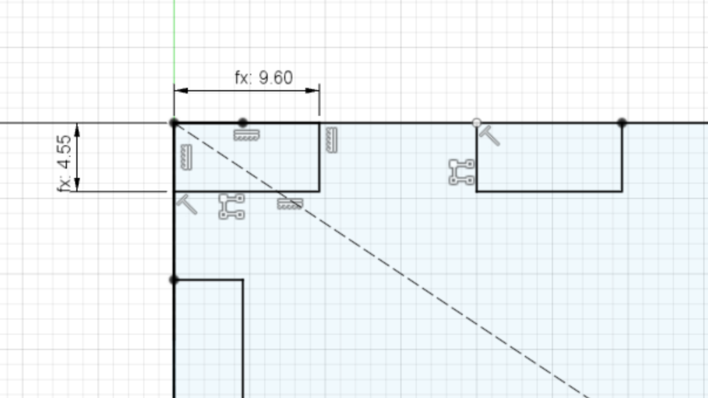
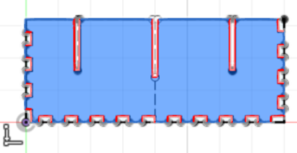
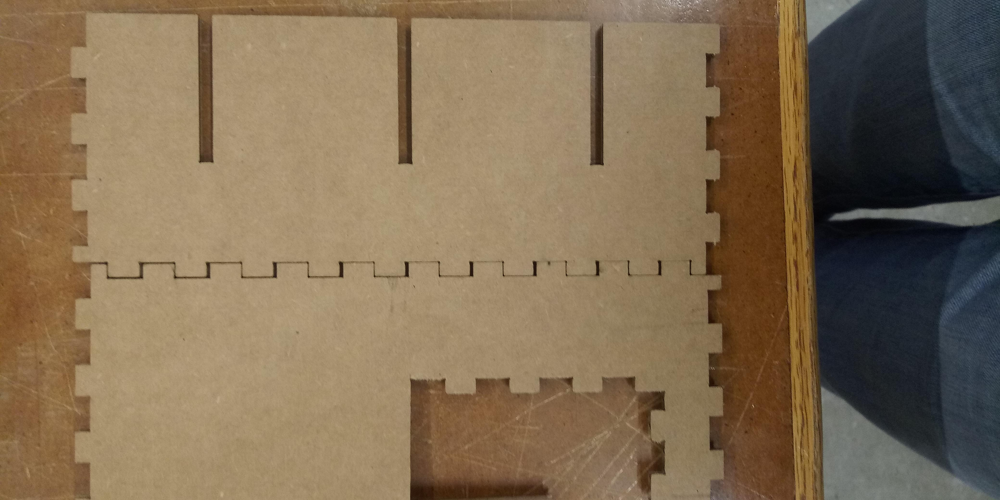

Week 2: 2D Fabrication
This week, we worked on using the laser cutter and the vinyl cutter. They both seem to be really precise machines that can take a lot of the human imprecision out of cutting out a 2D shape. Our project was to make something with the laser cutter: I chose to make a box to fit into my drawer and store my (excessive) washi tapes. I started with measuring everything out, leaving margins for error that I knew I would be sorry if I didn't leave. I then started making the designs in Fusion360. At first, I was overcomplicating the way the notches fit together, but with help, I finally managed to figure out the way the notches would be arranged.
 At first, I actually accounted for the kerfs backwards, which made a really loose fit, and everything was 4*(kerf) off.

But that was easily fixeable, and then everything went smoothly from then on (except for the corners, which I should have adjusted my design for but at that point I was willing to just let it go.)
Now, all I had to do was fill it up and put it in my drawer!
 Download f3d file
Download f3d file